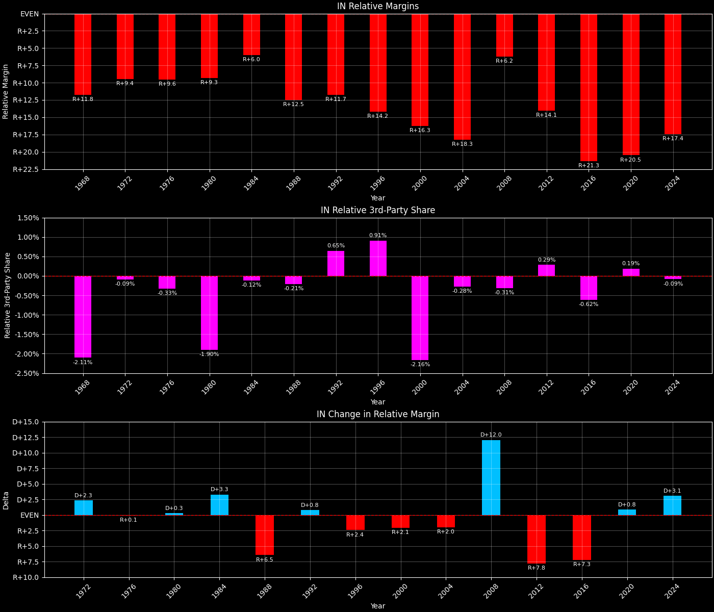
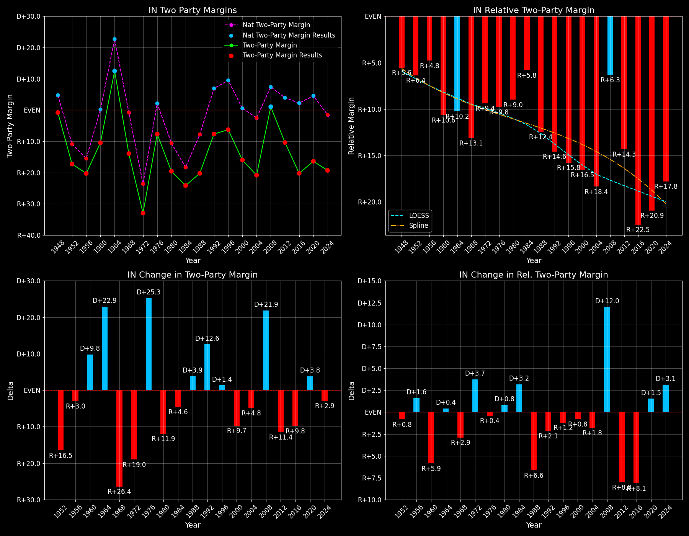

Indiana (IN) — Statewide

Margins · 3rd-Party share · Pres. deltas

Relative margins · Relative 3rd-Party · Rel. deltas
Indiana (IN) — Total Data
| Year | EVs | D | R | State Margin | Nat. Margin | Rel. Margin | Total votes |
|---|---|---|---|---|---|---|---|
| 1968 | 13 | 806,659(38.0%) | 1,067,885(50.3%) | R+12.3 | R+0.7 | R+11.6 | 2,123,597 |
| 1972 | 13 | 708,568(33.3%) | 1,405,154(66.1%) | R+32.8(Δ R+20.5) | R+23.1(Δ R+22.4) | R+9.6(Δ D+2.0) | 2,125,529 |
| 1976 | 13 | 1,014,714(45.7%) | 1,183,958(53.3%) | R+7.6(Δ D+25.1) | D+2.1(Δ D+25.2) | R+9.7(Δ R+0.1) | 2,220,362 |
| 1980 | 13 | 844,197(37.7%) | 1,255,656(56.0%) | R+18.4(Δ R+10.7) | R+9.7(Δ R+11.8) | R+8.6(Δ D+1.1) | 2,242,033 |
| 1984 | 12 | 841,481(37.7%) | 1,377,230(61.7%) | R+24.0(Δ R+5.6) | R+18.2(Δ R+8.5) | R+5.8(Δ D+2.8) | 2,233,069 |
| 1988 | 12 | 860,643(39.7%) | 1,297,763(59.8%) | R+20.2(Δ D+3.8) | R+7.7(Δ D+10.5) | R+12.4(Δ R+6.7) | 2,168,621 |
| 1992 | 12 | 848,420(36.8%) | 989,375(42.9%) | R+6.1(Δ D+14.0) | D+5.6(Δ D+13.3) | R+11.7(Δ D+0.8) | 2,305,871 |
| 1996 | 12 | 887,424(41.5%) | 1,006,693(47.1%) | R+5.6(Δ D+0.5) | D+8.5(Δ D+3.0) | R+14.1(Δ R+2.4) | 2,135,842 |
| 2000 | 12 | 901,980(41.0%) | 1,245,836(56.6%) | R+15.6(Δ R+10.1) | D+0.5(Δ R+8.0) | R+16.2(Δ R+2.0) | 2,199,302 |
| 2004 | 11 | 969,011(39.3%) | 1,479,438(59.9%) | R+20.7(Δ R+5.0) | R+2.5(Δ R+3.0) | R+18.2(Δ R+2.1) | 2,468,002 |
| 2008 | 11 | 1,374,039(49.9%) | 1,345,648(48.9%) | D+1.0(Δ D+21.7) | D+7.3(Δ D+9.7) | R+6.2(Δ D+12.0) | 2,751,054 |
| 2012 | 11 | 1,152,887(43.9%) | 1,420,543(54.1%) | R+10.2(Δ R+11.2) | D+3.9(Δ R+3.4) | R+14.1(Δ R+7.8) | 2,624,534 |
| 2016 | 11 | 1,033,126(37.8%) | 1,557,286(56.9%) | R+19.2(Δ R+9.0) | D+2.1(Δ R+1.8) | R+21.3(Δ R+7.2) | 2,734,958 |
| 2020 | 11 | 1,242,498(41.0%) | 1,729,857(57.0%) | R+16.1(Δ D+3.1) | D+4.5(Δ D+2.4) | R+20.5(Δ D+0.7) | 3,033,210 |
| 2024 | 11 | 1,163,603(39.6%) | 1,720,347(58.6%) | R+19.0(Δ R+2.9) | R+1.5(Δ R+5.9) | R+17.5(Δ D+3.0) | 2,936,677 |
Column explanations
- Δ
- Change (delta) in the value from the previous election year.
- Year
- Election year.
- EVs
- Number of electoral votes allocated to this state or unit.
- D
- Number of votes for the Democratic candidate (raw count(pct%)).
- R
- Number of votes for the Republican candidate (raw count(pct%)).
- State Margin
- Margin between the two major-party candidates, including third-party votes ((D - R)/total).
- Nat. Margin
- The national presidential margin for that year, including third-party votes ((D_total - R_total)/total_votes).
- Rel. Margin
- The presidential margin relative to the national presidential margin (Margin - Nat. Margin).
- Total votes
- Total voter turnout or ballots cast (when provided).
Indiana (IN) — Third-Party Data
| Year | D | R | Other votes | State 3rd-Party Share | 3rd-Party Nat. Share | 3rd-Party Rel. Share |
|---|---|---|---|---|---|---|
| 1968 | 806,659(38.0%) | 1,067,885(50.3%) | 249,053(11.7%) | 11.73% | 13.86% | -2.13% |
| 1972 | 708,568(33.3%) | 1,405,154(66.1%) | 11,807(0.6%) | 0.56% | 1.80% | -1.25% |
| 1976 | 1,014,714(45.7%) | 1,183,958(53.3%) | 21,690(1.0%) | 0.98% | 1.90% | -0.93% |
| 1980 | 844,197(37.7%) | 1,255,656(56.0%) | 142,180(6.3%) | 6.34% | 8.24% | -1.90% |
| 1984 | 841,481(37.7%) | 1,377,230(61.7%) | 14,358(0.6%) | 0.64% | 0.67% | -0.03% |
| 1988 | 860,643(39.7%) | 1,297,763(59.8%) | 10,215(0.5%) | 0.47% | 0.98% | -0.51% |
| 1992 | 848,420(36.8%) | 989,375(42.9%) | 468,076(20.3%) | 20.30% | 19.55% | 0.75% |
| 1996 | 887,424(41.5%) | 1,006,693(47.1%) | 241,725(11.3%) | 11.32% | 10.05% | 1.27% |
| 2000 | 901,980(41.0%) | 1,245,836(56.6%) | 51,486(2.3%) | 2.34% | 3.75% | -1.41% |
| 2004 | 969,011(39.3%) | 1,479,438(59.9%) | 19,553(0.8%) | 0.79% | 1.00% | -0.21% |
| 2008 | 1,374,039(49.9%) | 1,345,648(48.9%) | 31,367(1.1%) | 1.14% | 1.42% | -0.28% |
| 2012 | 1,152,887(43.9%) | 1,420,543(54.1%) | 51,104(1.9%) | 1.95% | 1.73% | 0.21% |
| 2016 | 1,033,126(37.8%) | 1,557,286(56.9%) | 144,546(5.3%) | 5.29% | 5.73% | -0.44% |
| 2020 | 1,242,498(41.0%) | 1,729,857(57.0%) | 60,855(2.0%) | 2.01% | 1.84% | 0.16% |
| 2024 | 1,163,603(39.6%) | 1,720,347(58.6%) | 52,727(1.8%) | 1.80% | 1.88% | -0.08% |
Column explanations
- Year
- Election year.
- D
- Number of votes for the Democratic candidate (raw count(pct%)).
- R
- Number of votes for the Republican candidate (raw count(pct%)).
- Other votes
- Number of votes for third-party (other) candidates (raw count(pct%)).
- State 3rd-Party Share
- Share of the vote received by third-party (other) candidates.
- 3rd-Party Nat. Share
- The national third-party share for that year (3rd-Party votes / total votes).
- 3rd-Party Rel. Share
- Third-party share relative to the national third-party share (3rd-Party share - Nat. 3rd-Party share).

Two-party margins · relative · deltas
Indiana (IN) — Two-Party Data
| Year | EVs | D | R | 2-Party Margin | 2-Party Nat. Margin | 2-Party Rel. Margin |
|---|---|---|---|---|---|---|
| 1968 | 13 | 806,659(43.0%) | 1,067,885(57.0%) | R+13.9 | R+0.8 | R+13.1 |
| 1972 | 13 | 708,568(33.5%) | 1,405,154(66.5%) | R+33.0(Δ R+19.0) | R+23.6(Δ R+22.8) | R+9.4(Δ D+3.7) |
| 1976 | 13 | 1,014,714(46.2%) | 1,183,958(53.8%) | R+7.7(Δ D+25.3) | D+2.1(Δ D+25.7) | R+9.8(Δ R+0.4) |
| 1980 | 13 | 844,197(40.2%) | 1,255,656(59.8%) | R+19.6(Δ R+11.9) | R+10.6(Δ R+12.7) | R+9.0(Δ D+0.8) |
| 1984 | 12 | 841,481(37.9%) | 1,377,230(62.1%) | R+24.1(Δ R+4.6) | R+18.3(Δ R+7.7) | R+5.8(Δ D+3.2) |
| 1988 | 12 | 860,643(39.9%) | 1,297,763(60.1%) | R+20.3(Δ D+3.9) | R+7.8(Δ D+10.5) | R+12.4(Δ R+6.6) |
| 1992 | 12 | 848,420(46.2%) | 989,375(53.8%) | R+7.7(Δ D+12.6) | D+6.9(Δ D+14.7) | R+14.6(Δ R+2.1) |
| 1996 | 12 | 887,424(46.9%) | 1,006,693(53.1%) | R+6.3(Δ D+1.4) | D+9.5(Δ D+2.6) | R+15.8(Δ R+1.2) |
| 2000 | 12 | 901,980(42.0%) | 1,245,836(58.0%) | R+16.0(Δ R+9.7) | D+0.5(Δ R+8.9) | R+16.5(Δ R+0.8) |
| 2004 | 11 | 969,011(39.6%) | 1,479,438(60.4%) | R+20.8(Δ R+4.8) | R+2.5(Δ R+3.0) | R+18.4(Δ R+1.8) |
| 2008 | 11 | 1,374,039(50.5%) | 1,345,648(49.5%) | D+1.0(Δ D+21.9) | D+7.4(Δ D+9.9) | R+6.3(Δ D+12.0) |
| 2012 | 11 | 1,152,887(44.8%) | 1,420,543(55.2%) | R+10.4(Δ R+11.4) | D+3.9(Δ R+3.4) | R+14.3(Δ R+8.0) |
| 2016 | 11 | 1,033,126(39.9%) | 1,557,286(60.1%) | R+20.2(Δ R+9.8) | D+2.2(Δ R+1.7) | R+22.5(Δ R+8.1) |
| 2020 | 11 | 1,242,498(41.8%) | 1,729,857(58.2%) | R+16.4(Δ D+3.8) | D+4.5(Δ D+2.3) | R+20.9(Δ D+1.5) |
| 2024 | 11 | 1,163,603(40.3%) | 1,720,347(59.7%) | R+19.3(Δ R+2.9) | R+1.5(Δ R+6.0) | R+17.8(Δ D+3.1) |
Column explanations
- Δ
- Change (delta) in the value from the previous election year.
- Year
- Election year.
- EVs
- Number of electoral votes allocated to this state or unit.
- D
- Number of votes for the Democratic candidate (raw count(pct%)).
- R
- Number of votes for the Republican candidate (raw count(pct%)).
- 2-Party Margin
- Margin between the two major-party candidates, ignoring third-party votes ((D - R)/(D + R)).
- 2-Party Nat. Margin
- The national presidential margin for that year, including third-party votes ((D_total - R_total)/total_votes).
- 2-Party Rel. Margin
- The presidential margin relative to the national presidential margin (Margin - Nat. Margin).